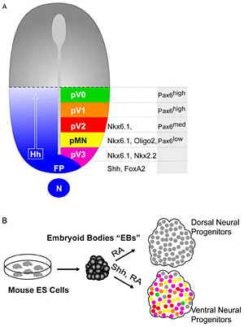

News Archives : 2007 : Chipping Away at Hedgehog-Mediated Neural Patterning
by Andrew McMahon and Steven Vokes
May 18, 2007
Recently, a technique known as ChIP-on-chip has been used to biochemically identify transcription factor binding sites in a variety of biological systems. In this method, the transcription factor is cross-linked to DNA and the sample is then sonicated into small DNA::protein fragments and immunoprecipitated with an antibody against the transcription factor of interest. The immunoprecipitated DNA, representing the associated transcription factor binding sites, is then detected by hybridization using DNA microarrays containing oligonucleotides (tiling arrays) representing the candidate genomic regions.
We sought to identify Gli targets in ventral neuronal progenitors using ES cells differentiated to a neural progenitor cell type. An epitope-tagged Gli1 protein was used to directly isolate cis-regulatory sequences by ChIP. ChIP products were then used to screen custom genomic tiling arrays of putative Hedgehog target genes predicted from previous transcriptional profiling studies. In addition to identifying expected Gli-target sites, the data predicted a number of unreported direct targets of Shh action. Transgenic analysis of binding regions in several of these genes established them as direct Hh-targets. These approaches provide significant new insights into both tissue specific and general transcriptional targets in a critical Hh-mediated patterning patterning event.
Because Hedgehog signaling in the neural tube is a relatively well characterized system, this model provides a particularly good opportunity for validating candidate targets. The core of the strategy, a genetically inducible system for epitope-tagging transcription factors, should be broadly applicable to the study of other transcription factors in a multitude of experimental systems.
|  | Hedgehog-mediated patterning of the ventral neural tube. (A) Shh secreated by the notochord (nt) and floorplate (fp) creates a ventral-dorsal gradient resulting in the specification of discrete neuronal identities. (B) ES cells differentiated to EBs form populations of ventral neural progenitors upon stimulation of Hh signaling. |